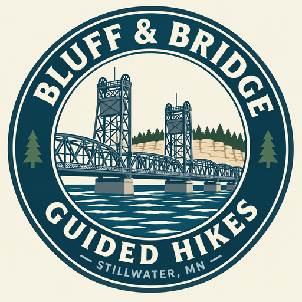

90-minute 1:1 walk
- Adults 18+
- Stillwater Historic Stairs Loop — about 3.5 mi
- Starts at the free lot at 126 Water St N
- Restrooms on route
[PRICE - Caitlin to set]

A quiet 1:1 walk through Stillwater with Caitlin, a guide who knows the way.
[PRICE - Caitlin to set]
[CAITLIN TO WRITE] A short introduction about who she is and why she walks with people in Stillwater.
[CAITLIN TO WRITE] A second sentence about what a guest can expect when they walk with her.
To guide people closer to faith through the beauty and lessons of nature.
Reach out by text or email, or leave a note below. No account and no payment up front.
Pay after your walk, in person or by Venmo.